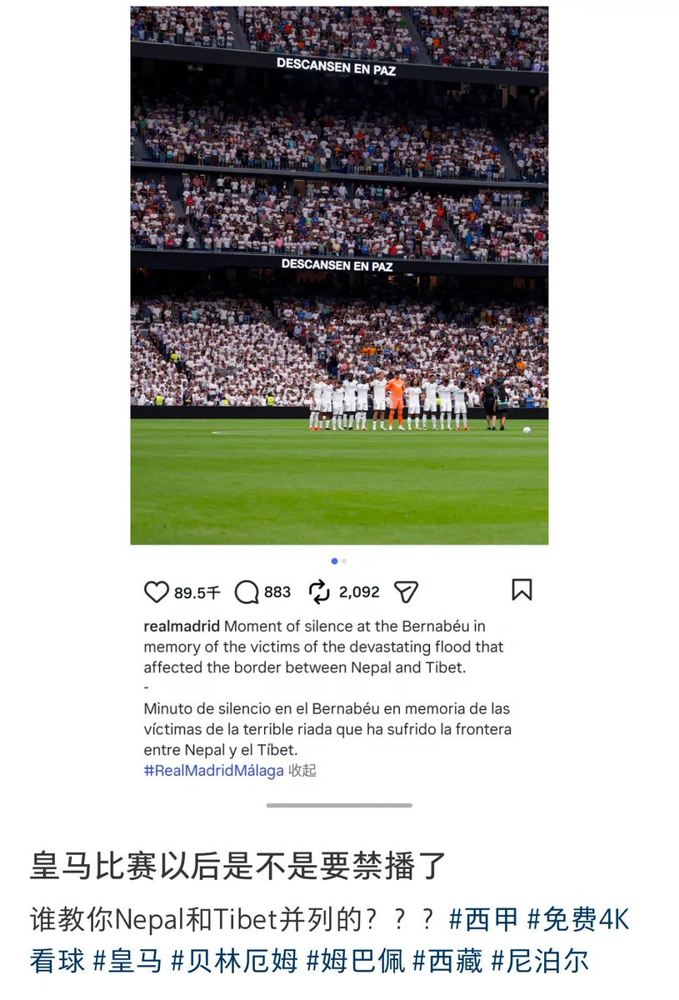

𝐀𝐬𝐡𝐥𝐞𝐲 𝐁𝐥𝐨𝐜𝐤🍥🌹🇹🇼🏳️⚧️🇪🇺
@bolckAshley
你國粉紅一遇上這種問題就老要強調要在你國的某些省份加上「中國」，包括但不限於什麼「中國台灣」「中國香港」「中國澳門」，這其實是一種玻璃心跟做賊心虛的心理的體現，因為我看就沒有中國人在跟外國人討論河南的事情的時候會要強調「中國河南」😁

李老师不是你老师
@whyyoutouzhele
8月30日，皇马在伯纳乌球场为尼泊尔、西藏洪灾遇难者举行一分钟默哀，并在官方社媒写道悼念“尼泊尔和西藏边境洪灾”的遇难者。
没想到，这一表述随即在中文互联网引发“辱华”争议。
部分网友认为，皇马没有写“中国西藏”，而是直接使用“Tibet”，是在“触碰国家主权底线”。 https://t.co/Dtl0EMA9Sn